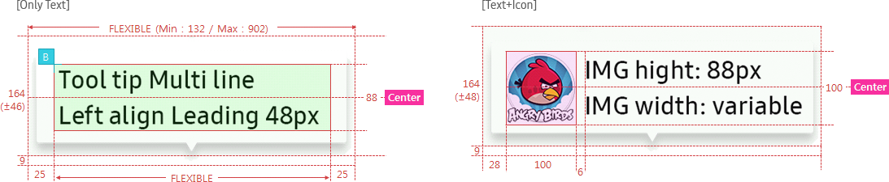

Tooltip
C_TOOLTIP
- Definition
-
Use a tooltip to display simple information about an item when users move the focus on or rollover an item.
Only provide the necessary information. Displayed tooltips cannot be controlled. - Usage
-
- - The tooltip allows up to two 2 lines for the text.
- - The position of the tooltip is related to the associated target element.
- - Use a tooltip to provide the operation explanation or information about the current status so that users can easily perform tasks.
- - By providing detailed information in a tooltip, users can configure detailed settings and can clearly understand the uncertain information.
- Interaction
-
- - The tooltip appears near the cursor automatically when the user pauses the focus over an item or some UI element.
- - It disappears when the user press the SELECT button, moves the focus away from the item, or simply waits for a N seconds.
- Specs
-
- Properties
-
- Tooltip consists of the following elements:
-
- 1. Text (Mandatory)
-
- - Provide minimal but sufficient information for users to understand the basic usage.
- - You can include text and image in a tooltip and use up to two lines.
- - If the length of the text exceeds the maximum width, make it continue to the next line.
- 1. Icon (Optional)
- Property Table
-
C_TOOLTIP PROPERTY USE VALUE Text ◎ <<value>> Icon <<value>> - Visual
-
- GUI
-
- C_TOOLTIP_WHITE
- C_TOOLTIP_WHITEMULTILINE
- 
- C_TOOLTIP_BUBBLETAIL
- Motion
-
- C_TOOLTIP_SINGLELINE
- C_TOOLTIP_MULTILINE
- C_TOOLTIP_MINIMUM

- *Tags :
- Basic Button, Dropdown Button, Toggle Button, Basic Slider, Playback Slider, Progress Bar